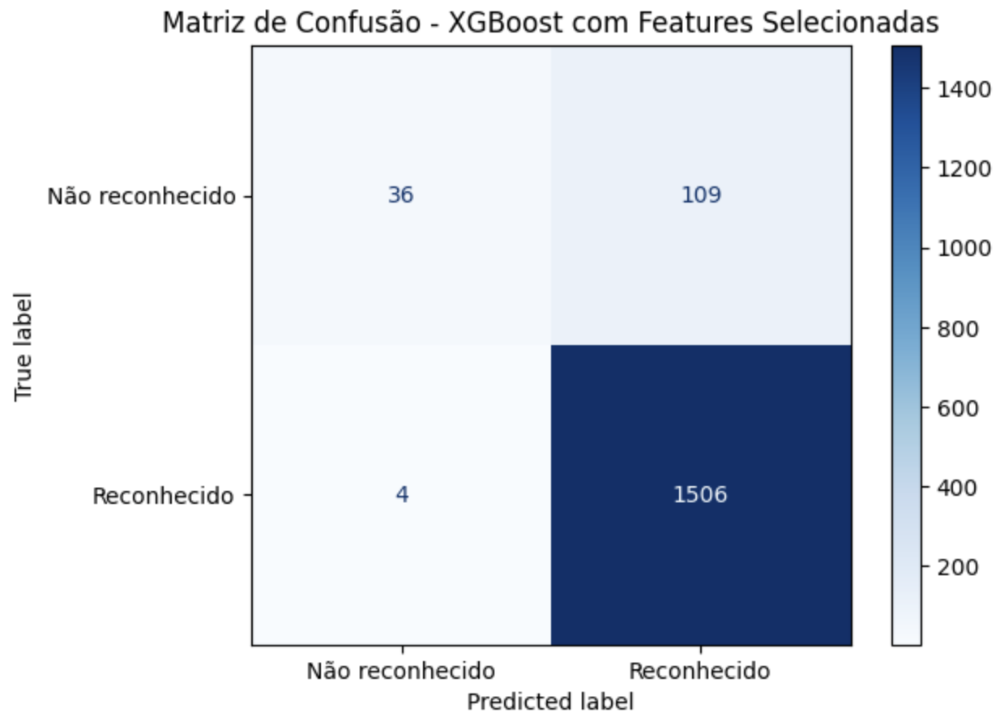
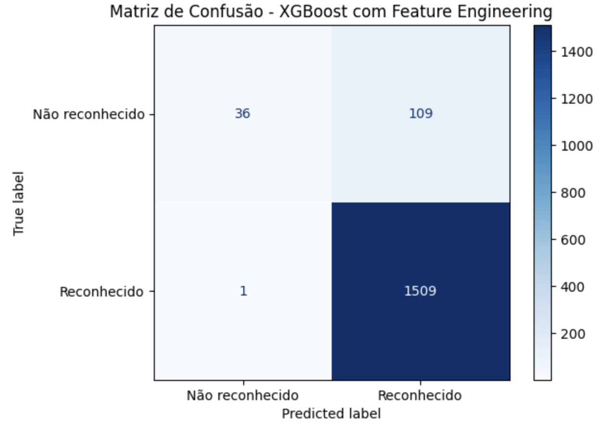
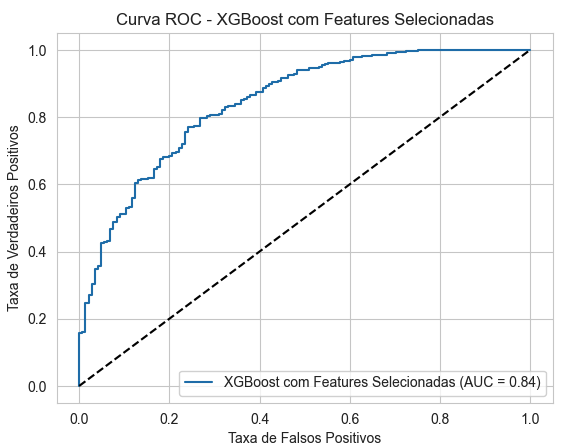
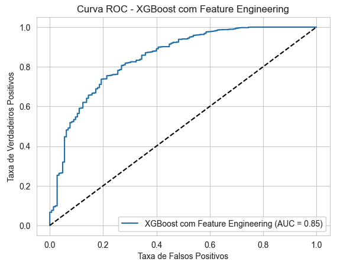

Resultados do modelo XGBoost#
Com base nas especificidades identificadas na base de dados, foram realizados testes utilizando quatro conjuntos de dados distintos:
Features agregadas com eventos ocorridos entre 2010 e 2017.
Features agregadas com eventos ocorridos entre 2018 e 2024.
Features desagregadas com eventos ocorridos entre 2010 e 2017.
Features desagregadas com eventos ocorridos entre 2018 e 2024.
Nota: Mais detalhes sobre o pré-processamento dos dados podem ser verificados no capítulo “Pré-processamento”.
As métricas analisadas foram:
Accuracy (Acurácia): Proporção de previsões corretas (tanto positivas quanto negativas) em relação ao total de casos.
Recall (Revocação): Proporção de casos positivos corretamente identificados pelo modelo. É crucial quando queremos capturar todos os casos positivos. No caso do reconhecimento federal, é um risco para o negócio que um evento não seja reconhecido quando o deveria ser.
Precision (Precisão): Proporção de previsões positivas que realmente são positivas. Importante para minimizar falsos positivos.
F1 Score: Média harmônica entre precisão e recall. É útil quando temos um desbalanceamento nas classes e queremos um equilíbrio entre precisão e recall.
Modelos com features agregadas#
Weighted avg F1-score: 86,59% no período 2010-2017 e 90,1% no período 2018-2024
O modelo performou melhor nos dados mais recentes. Isso pode indicar que os padrões nos dados de 2018-2024 são mais consistentes ou que as features agregadas capturam melhor as características dos eventos nesse período.
Baixo desempenho para a classe ‘Não reconhecido’.
Apesar do bom F1-score geral, o modelo teve dificuldades em prever corretamente a classe ‘Não reconhecido’. Isso significa que o modelo está tendo dificuldade em identificar corretamente os casos negativos.
Modelos com features desagregadas#
2010-2017#
Modelo |
Precisão |
Recall |
F1-score |
Precisão |
Recall |
F1-score |
Macro avg |
Weighted avg |
|---|---|---|---|---|---|---|---|---|
Sem balanceamento |
0.687500 |
0.152778 |
0.250000 |
0.908683 |
0.991830 |
0.948438 |
0.599219 |
0.874918 |
Com SMOTE |
0.524590 |
0.222222 |
0.312195 |
0.914308 |
0.976307 |
0.944291 |
0.628243 |
0.877754 |
Com SMOTE e variáveis > -0,01 |
0.634146 |
0.167742 |
0.265306 |
0.923169 |
0.990415 |
0.955610 |
0.610458 |
0.893403 |
Com SMOTE e correlação < 0,5 |
0.543860 |
0.200000 |
0.292453 |
0.925436 |
0.983387 |
0.953532 |
0.622992 |
0.893958 |
Uso do SMOTE: A aplicação do SMOTE, que é uma técnica de balanceamento, ajudou o modelo a identificar melhor os casos da classe minoritária (‘Não reconhecido’). Isso aumentou o F1-score dessa classe.
Houve uma queda na precisão, o que significa que o modelo passou a classificar mais casos como ‘Não reconhecido’, mas nem todos eram realmente dessa classe (aumentou o número de falsos positivos).
Essa situação representa um risco para o negócio
Seleção de Variáveis por Importância: A exclusão de variáveis com importância < -0,01 não alterou significativamente o desempenho.
Isso sugere que essas variáveis não estavam contribuindo muito para o modelo.
Remoção de Variáveis Correlacionadas: A remoção de variáveis altamente correlacionadas beneficiou o recall da classe minoritária, sem prejudicar a precisão.
2018-2024#
Modelo |
Precisão (Não reconhecido) |
Recall (Não reconhecido) |
F1-score (Não reconhecido) |
Precisão (Reconhecido) |
Recall (Reconhecido) |
F1-score (Reconhecido) |
Macro avg F1-score |
Weighted avg F1-score |
|---|---|---|---|---|---|---|---|---|
Sem balanceamento |
0.766667 |
0.194915 |
0.310811 |
0.939258 |
0.995257 |
0.966447 |
0.638629 |
0.917912 |
Com SMOTE |
0.648148 |
0.296610 |
0.406977 |
0.946104 |
0.987127 |
0.966180 |
0.686579 |
0.924784 |
Com SMOTE e variáveis > -0,01 |
0.648148 |
0.296610 |
0.406977 |
0.946104 |
0.987127 |
0.966180 |
0.686579 |
0.924784 |
Com SMOTE e correlação < 0,5 |
0.568966 |
0.279661 |
0.375000 |
0.944661 |
0.983062 |
0.963479 |
0.669240 |
0.919916 |
O modelo teve melhor desempenho na classe ‘Não reconhecido’ no período mais recente, indicando que os dados podem estar mais propícios para a identificação correta dessa classe.
Uso do SMOTE: A técnica de balanceamento melhorou o recall e o F1-score da classe ‘Não reconhecido’, apesar de uma leve redução na precisão.
Seleção de Variáveis por Importância e Remoção de Variáveis Correlacionadas: Assim como no período anterior, essas técnicas não tiveram um impacto significativo no desempenho, mas ajudaram a melhorar um pouco o recall da classe minoritária.
Primeiras conclusões#
Impacto do SMOTE: Melhorou o recall e F1-score da classe ‘Não reconhecido’.
Seleção de Variáveis por Importância: Simplificação do modelo aumentou o recall e F1-score.
Remoção de Variáveis Correlacionadas: Também melhorou o desempenho da classe minoritária, mantendo uma precisão ligeiramente maior.
Os modelos de 2018-2024 mostraram melhor desempenho geral na classe minoritária.
As técnicas de balanceamento e seleção de variáveis foram mais eficazes nos dados mais recentes.
Modelos adicionais 2018-2024#
Considerando os melhores resultados obtidos nos modelos testados com as variáveis desagregadas e com os dados 2018-2024, foram realizados testes adicionais.
Nesses testes adicionais, as seguintes variáveis foram agregadas:
Nova Variável |
Agregação |
|---|---|
DH_FERIDOS_ENFERMOS |
DH_FERIDOS + DH_ENFERMOS |
DH_DESABRIGADOS_DESALOJADOS |
DH_DESABRIGADOS + DH_DESALOJADOS |
DM_Uni_Habita_Danificadas_Destruidas |
DM_Uni Habita Danificadas + DM_Uni Habita Destruidas |
DM_Inst_Saude_Danificadas_Destruidas |
DM_Inst Saúde Danificadas + DM_Inst Saúde Destruidas |
DM_Inst_Ensino_Danificadas_Destruidas |
DM_Inst Ensino Danificadas + DM_Inst Ensino Destruidas |
DM_Inst_Servicos_Danificadas_Destruidas |
DM_Inst Serviços Danificadas + DM_Inst Serviços Destruidas |
DM_Inst_Comuni_Danificadas_Destruidas |
DM_Inst Comuni Danificadas + DM_Inst Comuni Destruidas |
DM_Obras_Infra_Danificadas_Destruidas |
DM_Obras de Infra Danificadas + DM_Obras de Infra Destruidas |
Novas métricas foram analisadas nessa nova rodada de testes:
AUC-ROC (Área Sob a Curva ROC): Mede a capacidade do modelo em distinguir entre classes. Valores mais próximos de 1 indicam melhor desempenho.
AUC-PR (Área Sob a Curva de Precisão-Revocação): Similar ao AUC-ROC, mas é mais informativa em conjuntos de dados desbalanceados.
Os resultados são apresentados a seguir:
Modelo |
accuracy_train |
accuracy_test |
recall_train |
recall_test |
precision |
f1 |
auc_roc |
auc_pr |
|---|---|---|---|---|---|---|---|---|
(1) XGBoost Base |
0.996 |
0.935 |
1.000 |
0.993 |
0.940 |
0.966 |
0.824 |
0.975 |
(2) XGBoost com Hiperparâmetros e balanceamento por pesos |
0.931 |
0.930 |
1.000 |
1.000 |
0.929 |
0.963 |
0.825 |
0.977 |
(3) XGBoost com Hiperparâmetros, balanceamento por pesos e Features Selecionadas |
0.944 |
0.932 |
0.998 |
0.996 |
0.934 |
0.964 |
0.843 |
0.980 |
(4) XGBoost com Hiperparâmetros, balanceamento por pesos e Feature Engineering |
0.945 |
0.933 |
0.999 |
0.997 |
0.934 |
0.964 |
0.846 |
0.978 |
Matriz de confusão para os modelos (2) e (3)
 |
 |
|---|---|
Matriz de Confusão - Seleção de features |
Matriz de Confusão - Feature Engineering |
Curva ROC para os modelos (2) e (3)
 |
 |
|---|---|
Curva ROC - Seleção de features |
Curva ROC - Feature Engineering |
Análise dos Resultados#
XGBoost Base
Acurácia e Recall Altos no Treino: A acurácia no treino é muito alta (99,6%), e o recall é 1.000, o que indica que o modelo está acertando praticamente todos os casos no treino.
Possível Overfitting: A acurácia no teste é um pouco menor (93,5%), e o recall cai para 0.993. Essa diferença sugere que o modelo pode estar se ajustando demais aos dados de treino (overfitting).
XGBoost com Hiperparâmetros e balanceamento por pesos
Modelo em que se utilizou o balanceamento por pesos de acordo com a relação classe majoritária / classe minoritária
Também se utilizou os hiperparâmetros sugeridos por Thakur (2020)
Redução do Overfitting: A acurácia de treino diminuiu para 93,1%, aproximando-se da acurácia de teste (93,0%). Isso indica redução do overfitting.
XGBoost com Hiperparâmetros, balanceamento por pesos e features selecionadas
Além do indicado em (2), nesse modelo selecionou-se as variáveis que contribuem acima da média para os resultados
Aumento no AUC-ROC e AUC-PR: O AUC-ROC aumentou para 0.843, indicando que o modelo está melhor em distinguir entre as classes.
XGBoost com Feature Engineering:
Além do indicado em (2), nesse modelo as variáveis que se referem a prejuízos foram agrupadas
Melhor AUC-ROC: O AUC-ROC é o mais alto entre os modelos (0.846), sugerindo que o feature engineering (criação de novas features) melhorou a capacidade do modelo de distinguir entre as classes.
Conclusões#
Redução de Overfitting com seleção de hiperparâmetros e seleção de Features:
Ajustar os hiperparâmetros e selecionar as features ajudou a reduzir o overfitting, equilibrando melhor a acurácia entre o treino e o teste.
Feature Engineering Beneficiou o Modelo:
A criação de novas features agregadas aumentou o AUC-ROC, indicando uma melhor capacidade de diferenciação entre as classes. Isso pode significar que as novas features capturaram informações relevantes que não estavam claras antes.
Desempenho Consistente na Classe Positiva: O recall alto (próximo ou igual a 1.000) pode ser positivo se o objetivo é não perder nenhum caso positivo.
Acurácia de Treino vs. Teste: Modelos com acurácia de treino muito superior à de teste podem estar sofrendo de overfitting. Se for desejável que essas acurácias sejam próximas, o modelo com seleção de hiperparâmetros e agregação de algumas variáveis pode ser mais interessante do que os demais.